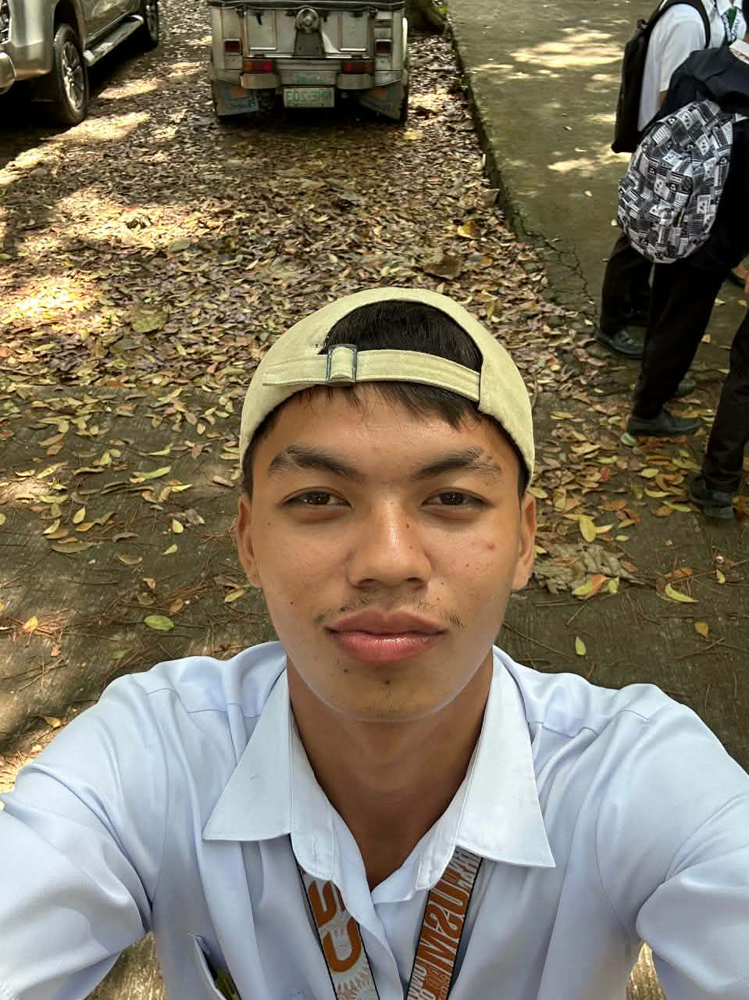
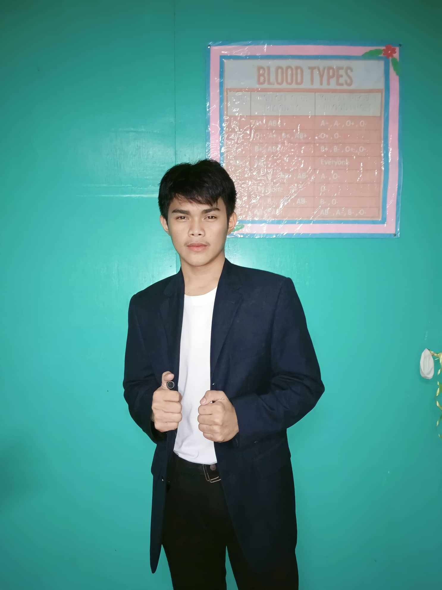
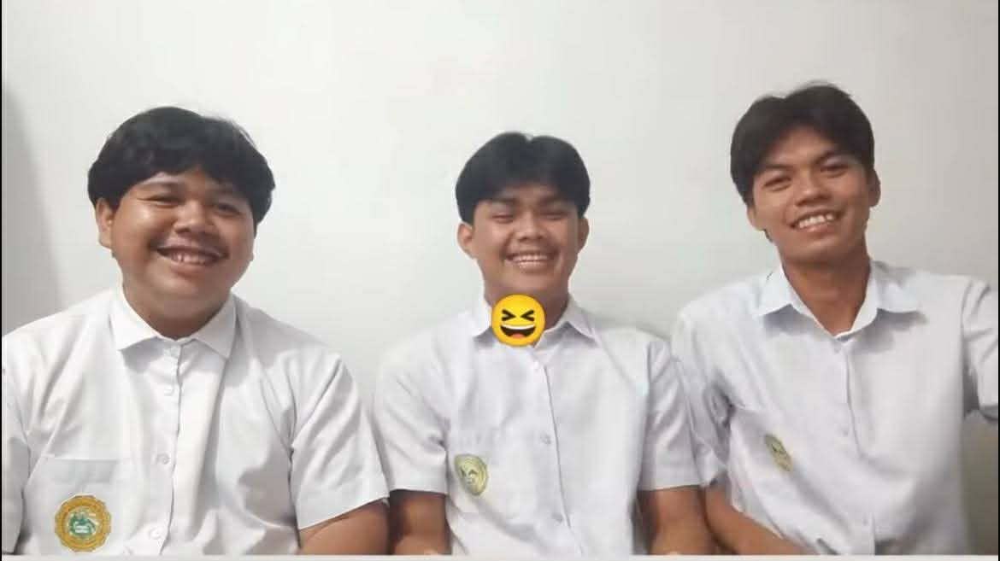

About Us
We are students currently taking Bachelor of Science in Information Systems at the University of Southern Mindanao. This portfolio website represents our journey in learning web development, system design, and problem solving. We created this project to showcase our skills in HTML, CSS, and building structured and user-friendly web pages.
Throughout our academic journey, we have learned how to design simple systems, organize information efficiently, and develop web interfaces that are easy to use. These experiences help us understand how technology can be applied in real-world situations. We are continuously improving our technical and creative skills to prepare for future careers in the IT industry.
Aside from academics, we enjoy coding, gaming, and exploring new technologies. We also value teamwork, communication, and responsibility in completing projects. This portfolio reflects our growth, dedication, and commitment to becoming successful IT professionals in the future.
Meet Our Team

Fahlavi Maongko
Team Member

Diamar T. Malaguia
Front-End Developer
- Problem-solving
- Critical thinking
- Time management
- Attention to detail
- Teamwork
- Communication
Shariff Jimmy M. Abubacar
Team Member
Our Team Together
